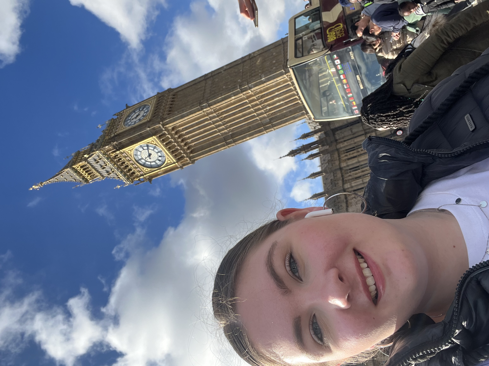

Ik ben Marije van der Ploeg, 21 jaar oud. Word zaterdag 22 jaar. Woon in Zoutkamp, heb 2 broertje en 1 zusje. Werk bij de Douglas sinds iets meer dan 2 maaden. De foto hieronder is van Feburuari, toen was is alleen op vakntie in Londen. Ik doe nu sinds januari deze opleiding, het heeft alleen niet men prioriteit. Want werk gaat voor en ben nog al veel aan het werken. Deze studie is voor mij leuk om te leren in de vrije tijd. Was altijd al benieuwd hoe dit werk. En nu weet ik dat, ik heb er ook wel aanleg voor merk ik, anders was dit ook veel te moeilijk. Het na deel wel dat ik er niet elke week aan toe kom, is dat je veel terug moet lezen. Maar gelukkig heb ik een boekje bij gehouden met de belangrijkste dingen.
